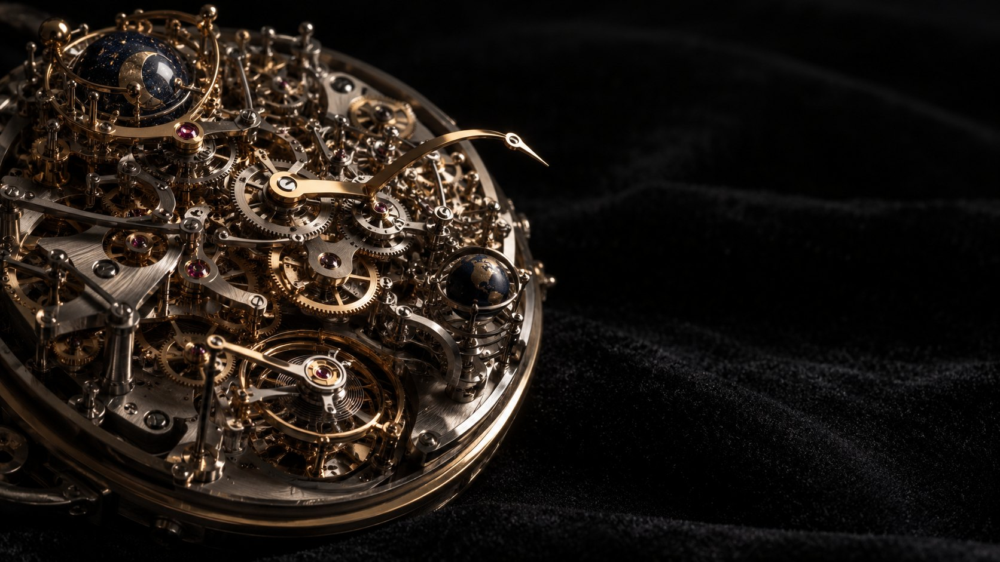

Building got cheap. Carrying didn't. Every part you add, you pay for on every turn.
A part is nearly free to add now. You still pay for it on every turn after. Add a few and watch the cream hand fall behind the brass one, which is true time.
That is what my setup loaded on every turn: rules, hooks, routers, context. My million-token window evaporated like water.
Tap a part to ask it.
I tested every part of my setup that way. If the answer is no, it comes out.
Every part clicks on. Try to take one off.
Each part clicks on in a second. Nothing clicks off. To remove one, you have to lift the pawl on purpose.
John Gall wrote that down in 1975. Start with a simple thing that keeps time, then grow it one part at a time. Slide it out and find where it stops.
Keeps time.
When I retired the routing layer, my instruction file went from 1,013 words to 734. Pull the slider and watch the hand steady.
Pick the part you will give up first. Only then can you add one. The count holds, and so does the drift.
One part, one shadow. It keeps time. The simplest thing that works.
The movement needs WebGL. This is the finished one.